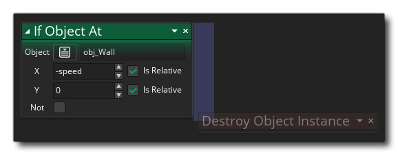

如果物体位于 如果物体位于
如果物体位于 如果物体位于
This action is used to check and see if there is a collision with one or more instances of a given object with the current instance placed at a point in the room, based on the collision mask of the calling instance. The action will evaluate to true if a collision is detected, or false otherwise. You give the object to check for and the position to "place" the instance to perform the check - which can be an absolute position in the room or a position relative to the instance - and you can also check the Not flag to check if there is not a collision at the given position, in which case the action will then only evaluate as true if no collisions are found, otherwise it will evaluate as false.
After giving the object and position, you can check/uncheck the option to Return List. Checking this means the action will create and populate a list data structure with all instances in collision with the instance and set the Target variable to the DS list ID. 要是你不选中，如果没有碰撞发生，目标 变量将被设为小于0的数，或者所有发生碰撞的实例中一个 实例的独特ID，也就是说如果有多个实例发生碰撞，你只能知道其中一个实例的ID而不知道其它的，除非你使用了列表（将return list选中）。
如果你选择返回列表，并且目标变量没有 被设置为 临时 那么你也可以选择 释放目标 选项。当你将释放标签选项设为 true，那么每次调用此动作时，目标变量包含的列表将被清除并创建一个新列表，并将新列表返回给目标变量。这样 你就能反复使用此变量而不需要担心存储溢出。但如果你没有 选中 释放目标 选项，你可能会因为为原列表加入新实例而使原来的列表出错。注意 无论 你是否选中了释放标签标签，只要你为此动作设置了返回列表，则目标变量将始终包含列表ID < / i8>，因此，当实例被摧毁或房间结束时，需要释放此列表（例如，你可以使用清理</ b9>事件，以及 释放数据结构</ a10>动作）。值得注意的是你可将 释放目标 选项设为使用预定义的变量或表达式，因此你可以通过预先设定好的变量（或使用具有不同结果的表达式）来控制到底何时释放目标，只要它的值为 true/false。
最后，你需要提供 目标变量来存储返回值或ID列表。如果你设置的目标变量是 临时 </ b1>（局部）变量，那么此动作创建的变量 只 </ i2>保存返回值到事件结束。在这种情况下，如果已选中该选项，释放目标 选项不会生效，需要您来负责销毁DS列表。如果没提供目标变量而选中了 返回列表 选项，那么将不会创建列表。
重要！ 碰撞检测只对那些有碰撞遮罩的实例有效 （碰撞双方都要有）。例子：它们有一个被分配给sprite_index的精灵， 或被分配给 mask_index的精灵。If either of the instances in the collision have no collision mask then the collision will not be detected, regardless of what the instance is drawing at the time.
注意如果需要添加此动作进”if"代码块，它们应该被放到动作的 一边 ，如下图所示： 

参数 描述 物体 要检查的对象的实例 x 需要检查的X坐标 y 需要检查的X坐标 释放目标列表 可以被设置为一个变量或表达式或 true/false 来在重新使用列表变量控制列表存储的释放。 目标 此动作返回值的目标变量

上述代码块将检查是否有任何实例与物体”obj_wall"的左边或右边有碰撞，如果有，它将反转被调用物体的水平方向（左右颠倒）。